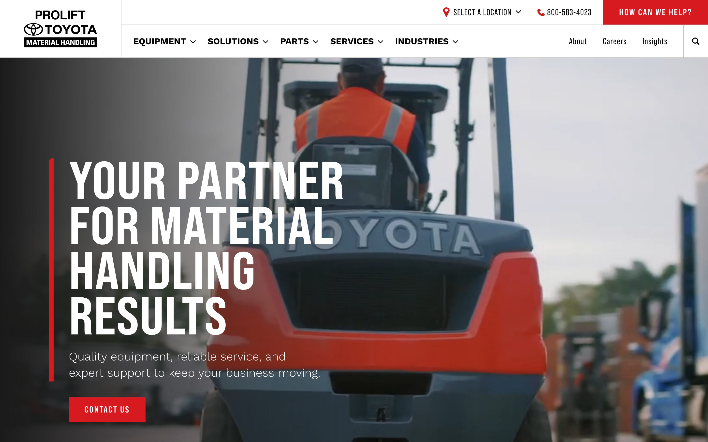
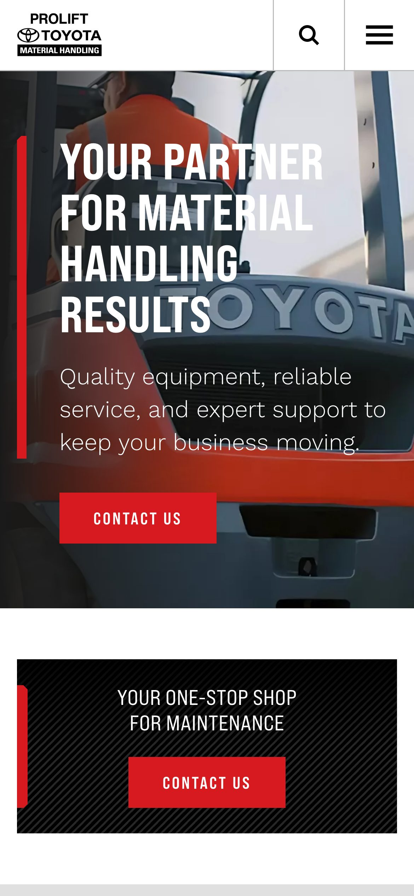
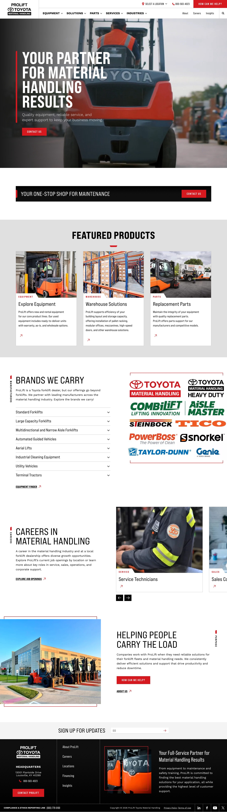

ProLift Toyota Material Handling
A dealer site for a Toyota material-handling distributor: forklifts, aerial lifts, automated guided vehicles, pallet racking, parts and service across multiple locations. The problem is catalog scale — a product taxonomy deep enough to get lost in, which still has to stay walkable for someone who doesn't know the names of things. Industrial subject matter treated with real photography and confident type instead of stock-photo gloss.



Notes
Bebas Neue Pro Expanded carries the display type — condensed caps, set large and tight — over Work Sans for body and interface. The headline lockup does most of the brand work.
Toyota red is used as structure rather than decoration: a vertical hairline rule to the left of section headings, rotated section labels running up the margin, and a single accent on the primary action.
One card shape — photograph, category tag, short copy, diagonal arrow — is reused across products, careers and insights. Underneath it, an accordion index and an Equipment Finder handle the taxonomy problem for people who can't name what they need.